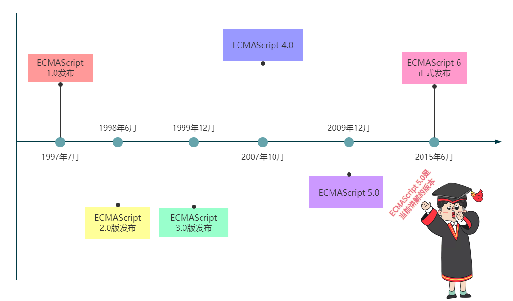
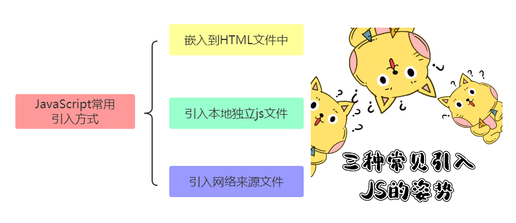
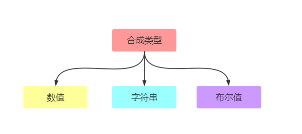
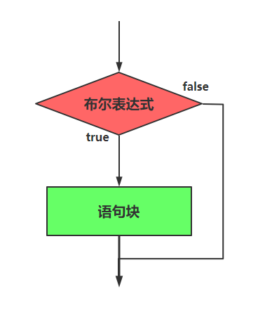
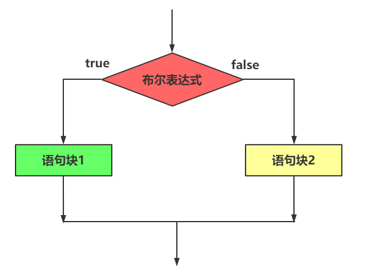
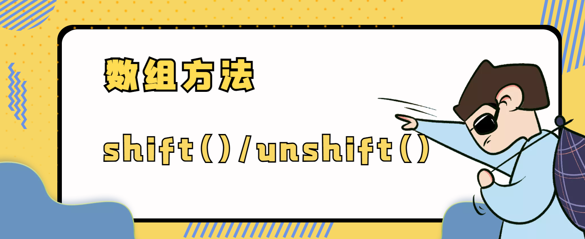

JavaScript
JavaScript简介¶

JavaScript介绍¶
JavaScript 是一种轻量级的脚本语言。所谓“脚本语言”，指的是它不具备开发操作系统的能力，而是只用来编写控制其他大型应用程序的“脚本”。
JavaScript 是一种嵌入式（embedded）语言。它本身提供的核心语法不算很多
为什么学习 JavaScript¶
- 操控浏览器的能力
- 广泛的使用领域
- 易学性
JavaScript与ECMAScript的关系¶
ECMAScript和JavaScript的关系是，前者是后者的规格，后者是前者的一种实现。在日常场合，这两个词是可以互换的。
JavaScript版本¶

实时效果反馈
1. ECMAScript和JavaScript关系：
A JavaScript是ECMAScript的父级
B JavaScript是ECMAScript的子级
C 不存在ECMAScript这个名字
D 前者是后者的规格，后者是前者的一种实现
2. 以下哪个不是JavaScript的优点:
A JavaScript操控浏览器的能力
B JavaScript广泛的使用领域
C JavaScript易学性
D JavaScript可以实现操作系统
答案
1=>D 2=>D
JavaScript语句、标识符¶
语句¶
JavaScript 程序的单位是行（line），也就是一行一行地执行。一般情况下，每一行就是一个语句
语句以分号结尾，一个分号就表示一个语句结束
标识符¶
标识符（identifier）指的是用来识别各种值的合法名称。最常见的标识符就是变量名
标识符是由：字母、美元符号($)、下划线(_)和数字组成，其中数字不能开头
温馨提示
中文是合法的标识符，可以用作变量名（不推荐）
JavaScript保留关键字¶
以下关键字不需要强行记忆！
JavaScript有一些保留字，不能用作标识符：arguments、break、case、catch、class、const、continue、debugger、default、delete、do、else、enum、eval、export、extends、false、finally、for、function、if、implements、import、in、instanceof、interface、let、new、null、package、private、protected、public、return、static、super、switch、this、throw、true、try、typeof、var、void、while、with、yield。
实时效果反馈
1. 以下哪个命名是正确的：
A var const = 10;
B var 10Num = 20;
C var @A = 30;
D var age=20;
2. 以下哪个是标识符命名规则:
A 字母、美元符号($)、下划线(_)和数字
B 字母、美元符号($)、下划线(_)和数字，其中数字不能开头
C 字母、美元符号($)、百分号(%)和数字，其中数字不能开头
D 字母、美元符号($)、下划线(_)和特殊符号
答案
1=>D 2=>B
变量¶
变量的重新赋值¶
变量提升¶
JavaScript 引擎的工作方式是，先解析代码，获取所有被声明的变量，然后再一行一行地运行。这造成的结果，就是所有的变量的声明语句，都会被提升到代码的头部，这就叫做变量提升（hoisting）。
实时效果反馈
1. 以下代码打印正确的是：
A 10
B 错误
C undefined
D num
答案
1=>C
JavaScript引入到文件¶

嵌入到HTML文件中¶
引入本地独立JS文件¶
引入网络来源文件¶
<body>
<script src="https://cdn.bootcdn.net/ajax/libs/jquery/3.6.0/jquery.min.js"> </script>
</body>
实时效果反馈
1. 以下哪种不是JS文件引入到HTML文件中的方式：
A JS嵌入到HTML文件中
B 引入本地独立JS文件
C 引入网络来源的JS文件
D JS嵌入到CSS文件中
2. 以下代码是哪种JS引入到HTML文件中的方式:
A JS嵌入到HTML文件中
B 引入本地独立JS文件
C 引入网络来源的JS文件
D JS嵌入到CSS文件中
答案
1=>D 2=>B
JavaScript注释与常见输出方式¶

JavaScript注释¶
源码中注释是不被引擎所解释的，它的作用是对代码进行解释。Javascript 提供两种注释的写法：一种是单行注释，用//起头；另一种是多行注释，放在/和/之间。
嵌入在HTML文件中的注释
温馨提示
注释的快捷键：
ctrl + /
JavaScript输出方式¶
JavaScript有很多种输出方式，都可以让我们更直观的看到程序运行的结果
// 在浏览器中弹出一个对话框,然后把要输出的内容展示出来,alert都是把要输出的内容首先转换为字符串然后在输出的
alert("要输出的内容");
document.write("要输出的内容");
// 在控制台输出内容
console.log("要输出的内容");
实时效果反馈
1. 下述代码横线处应填写的代码：
A document
B alert
C log
D write
2. 下述代码横线处应填写的代码:
A document
B alert
C log
D write
答案
1=>D 2=>C
数据类型¶

数据类型分类¶
JavaScript 语言的每一个值，都属于某一种数据类型。JavaScript 的数据类型，共有六种。（ES6 又新增了第七种 Symbol 类型的值和第八种 BigInt类型，当前课程暂不涉及）
数据类型分类¶
原始类型(基础类型)¶

合成类型(复合类型)¶
对象：因为一个对象往往是多个原始类型的值的合成，可以看作是一个存放各种值的容器

温馨提示
至于undefined和null，一般将它们看成两个特殊值。
实时效果反馈
1. 以下那个是字符串类型数据：
A var age = 20;
B var name = "尚学堂"
C var learn = true
D var user = {}
2. 以下关于原始数据类型分类正确的是:
A 数值、字符串、布尔值、对象
B 数值、字符串、布尔值、null
C 数值、字符串、布尔值、undefined
D 数值、字符串、布尔值
答案
1=>B 2=>D
typeof运算符¶
JavaScript 有三种方法，可以确定一个值到底是什么类型。而我们现在需要接触到的就是typeof
数值返回number¶
字符串返回string¶
布尔值返回boolean¶
对象返回object¶
unll和undefined的区别¶
null与undefined都可以表示“没有”，含义非常相似。将一个变量赋值为undefined或null，老实说，语法效果几乎没区别。既然含义与用法都差不多，为什么要同时设置两个这样的值，这不是无端增加复杂度，令初学者困扰吗？这与历史原因有关
实时效果反馈
1. 下列字符串数据类型的关键字是：
A number
B string
C boolean
D object
2. 以下代码执行结果正确的是:
A number
B string
C boolean
D object
答案
1=>B 2=>A
运算符之算术运算符¶

加减乘除运算符¶
加减乘除运算符就是基本的数学运算符效果
余数运算符¶
余数运算符是比较常用的，因为在逻辑思维上寻找规律，余数运算符是很好用的
自增和自减运算符¶
自增和自减运算符，是一元运算符，只需要一个运算子。它们的作用是将运算子首先转为数值，然后加上1或者减去1
自增和自减运算符有一个**需要注意**的地方，就是放在变量之后，会先返回变量操作前的值，再进行自增/自减操作；放在变量之前，会先进行自增/自减操作，再返回变量操作后的值。
实时效果反馈
1. 下列代码执行结果正确的是：
A 9
B 10
C 11
D 12
2. 关于自增自减运算符描述正确的是 :
A 自增和自减运算符，是二元运算符，只需要二个运算子
B 自增和自减运算符，就是加法和减法运算符
C 自增和自减运算符，是一元运算符，只需要一个运算子
D 自增和自减运算符，符号在前或者在后都是一样的
答案
1=>A 2=>C
运算符之赋值运算符¶

赋值运算符（Assignment Operators）用于给变量赋值
最常见的赋值运算符，当然就是等号（=）
赋值运算符还可以与其他运算符结合，形成变体。下面是与算术运算符的结合
// 等同于 x = x + y
x += y
// 等同于 x = x - y
x -= y
// 等同于 x = x * y
x *= y
// 等同于 x = x / y
x /= y
// 等同于 x = x % y
x %= y
实时效果反馈
1.下列代码的运行结果是 ：
A 10
B 20
C 30
D 40
2. 下列代码的运行结果是:
A 20
B 25
C 30
D 35
答案
1=>C 2=>B
运算符之比较运算符¶

比较运算符用于比较两个值的大小，然后返回一个布尔值，表示是否满足指定的条件。
JavaScript 一共提供了8个比较运算符。
| 比较运算符 | 描述 |
|---|---|
| < | 小于运算符 |
| > | 大于运算符 |
| <= | 小于或等于运算符 |
| >= | 大于或等于运算符 |
| == | 相等运算符 |
| === | 严格相等运算符 |
| != | 不相等运算符 |
| !== | 严格不相等运算符 |
“”和“=”的区别¶
==：双等比较值¶
===：三等比较值和类型
实时效果反馈
1.下列那个选项是比较运算符 ：
A =
B ==
C +=
D ++
2. 下列关于""和"="运算符的描述正确的是:
A 双等比较值,三等也是比较值
B 双等比较值和类型,三等比较值
C 双等比较值和类型,三等比较值和类型
D 双等比较值,三等比较值和类型
答案
1=>B 2=>D
运算符之布尔运算符¶

取反运算符（!）¶
布尔值取反¶
非布尔值取反¶
对于非布尔值，取反运算符会将其转为布尔值。可以这样记忆，以下六个值取反后为true，其他值都为false。
温馨提示
undefined null false 0 NaN 空字符串（''）
且运算符（&&）¶
多个条件都要满足
如果一个人一直做好事，突然有一天做了一件坏事，那么人们会认为这个人很虚伪，以前说不定都是装的！对这个人不在认可
或运算符（||）¶
满足一个条件即可
如果一个人一直做坏事，突然有一天做了一件好事，那么人们会认为这个人其实还不错，以前也许是另有原因！对这个人突然就认可了
实时效果反馈
1.下列代码运行结果是 ：
A true true
B false false
C true false
D false true
2. 下列代码中运行结果是:
A 0
B true
C 1
D false
答案
1=>C 2=>D
条件语句之 if语句¶

if结构先判断一个表达式的布尔值，然后根据布尔值的真伪，执行不同的语句。所谓布尔值，指的是 JavaScript 的两个特殊值，true表示真，false表示伪。

if语句语法规范¶
需要注意的是，“布尔值”往往由一个条件表达式产生的，必须放在圆括号中
注意，if后面的表达式之中，不要混淆赋值表达式（=）、严格相等运算符（===）和相等运算符（==）。尤其是赋值表达式不具有比较作用。
实时效果反馈
1.下列条件语句中，横线处应填写代码是 ：
A <
B =
C ==
D >
2. 下列代码运行结果是:
A >=
B =
C ==
D ===
答案
1=>D 2=>D
条件语句之 if...else¶
if...else基本结构¶
if代码块后面，还可以跟一个else代码块，表示不满足条件时，所要执行的代码。

多个if...else连接¶
对同一个变量进行多次判断时，多个if...else语句可以连写在一起。

if...else嵌套¶
var eat = true;
var food = "猪肉炖粉条";
if (eat) {
if (food == "双椒鱼头") {
console.log('双椒鱼头');
}else{
console.log("猪肉炖粉条");
}
} else {
console.log('不吃了');
}
else代码块总是与离自己最近的那个if语句配对。
实时效果反馈
1.下列条件语句中，横线处应填写代码是 ：
var eat = true;
var food = "猪肉炖粉条";
if (eat) {
if (food ___ "双椒鱼头") {
console.log('双椒鱼头'); // 打印双椒鱼头
}else{
console.log("猪肉炖粉条");
}
} else {
console.log('不吃了');
}
A =
B ==
C ===
D !=
2. 下列代码运行结果是:
var day = 3;
if(day === 1){
console.log("再向虎山行");
}else if(day === 2){
console.log("路漫漫");
}else if(day === 3){
console.log("野茫茫");
}else if(day === 4){
console.log("曙光在前头");
}else if(day === 5){
console.log("归心似箭");
}else{
console.log("胜利大逃亡");
}
A 再向虎山行
B 野茫茫
C 曙光在前头
D 胜利大逃亡
答案
1=>D 2=>B
条件语句之 switch¶

多个if...else连在一起使用的时候，可以转为使用更方便的switch结构

需要注意的是，每个case代码块内部的break语句不能少，否则会接下去执行下一个case代码块，而不是跳出switch结构。
var x = 1;
switch (x) {
case 1:
console.log('x 等于1');
case 2:
console.log('x 等于2');
default:
console.log('x 等于其他值');
}
// x等于1
// x等于2
// x等于其他值
实时效果反馈
1.下列swtich语句中，横线处应填写代码是 ：
var x = 4;
switch (x) {
case 1:
console.log('x 等于1');
break
case 2:
console.log('x 等于2');
____
default:
console.log('x 等于其他值'); // 打印x等于其他值
}
A swtich
B case
C break
D default
2. 下列代码运行结果是:
var x = 2;
switch (x) {
case 1:
console.log('x 等于1');
case 2:
console.log('x 等于2');
default:
console.log('x 等于其他值');
}
A x 等于1 x 等于2 x 等于其他值
B x 等于1 x 等于2
C x 等于2 x 等于其他值
D x 等于1 x 等于其他值
答案
1=>C 2=>C
三元运算符¶

JavaScript还有一个三元运算符（即该运算符需要三个运算子）?:，也可以用于逻辑判断。

这个三元运算符可以被视为if...else...的简写形式，因此可以用于多种场合。
判断一个整数是奇数与偶数¶
if...else语句¶
三元运算符¶
实时效果反馈
1.以下代码是三元运算符，横线处应该填写 ：
A && ||
B ? :
C >= <=
D == ===
2. 下列关于三元运算符表达式描述正确的是:
A if(条件){}else{}
B switch(条件){}
C if(条件){}
D (条件) ? 表达式1 : 表达式2
答案
1=>B 2=>D
循环语句之for¶

循环语句用于重复执行某个操作
for语句就是循环命令，可以指定循环的起点、终点和终止条件。它的格式如下
for语句后面的括号里面，有三个表达式。
-
初始化表达式（initialize）：确定循环变量的初始值，只在循环开始时执行一次。
-
布尔表达式（test）：每轮循环开始时，都要执行这个条件表达式，只有值为真，才继续进行循环。
-
迭代因子（increment）：每轮循环的最后一个操作，通常用来递增循环变量。

for语句的三个表达式，可以省略任何一个，也可以全部省略。
温馨提示
如果三个都省略，结果就导致了一个无限循环（死循环）
实时效果反馈
1.以下代码是一个循环语句，横线处应该填写 ：
A == ++
B < ++
C > ++
D < ==
2. 下列关于循环语句描述错误的是:
A 初始化表达式：确定循环变量的初始值，只在循环开始时执行一次。
B 布尔表达式：每轮循环开始时，都要执行条件表达式，只有值为真，才继续进行循环
C 迭代因子：每轮循环的最后一个操作，通常用来递增循环变量
D 三个表达式全部省略，不会出现无限循环（死循环）
答案
1=>B 2=>D
for循环语句实操¶

循环输出1~100之间数字的和¶
循环输出1000以内的奇数¶
打印九九乘法表¶
for(var i = 1;i <= 9;i++){
document.write("<br>");
for(var j = 1;j <= i;j++){
sum = i * j;
document.write(i ,"*",j ,"=",sum," ");
}
}
循环语句之while¶

While语句包括一个循环条件和一段代码块，只要条件为真，就不断循环执行代码块。
while例子¶
下面的例子是一个无限循环，因为循环条件总是为真
所有for循环，都可以改写成while循环
// for
var x = 3;
for (var i = 0; i < x; i++) {
console.log(i);
}
// while
var x = 3;
var i = 0;
while (i < x) {
console.log(i);
i++;
}
实时效果反馈
1.以下代码是一个循环语句，横线处应该填写 ：
A <
B <=
C >
D >=
2. 下列代码，运行结果是 ：
A 输出一次"Hello, world"
B 没有任何输出
C 无限次输出"Hello, world"(死循环)
D 输出两次"Hello, world"
答案
1=>B 2=>C
break 语句和 continue 语句¶
break语句和continue语句都具有跳转作用，可以让代码不按既有的顺序执行
break¶
break语句用于跳出代码块或循环
continue¶
continue语句用于立即终止本轮循环，返回循环结构的头部，开始下一轮循环

实时效果反馈
1.break和continue的区别 ：
A break和continue一样，都是跳出本次循环，进行下次循环
B break跳出本次循环，进入下次循环，continue跳出整个循环
C break跳出整个循环，continue跳出本次循环，进入下次循环
D break和continue一样，跳出全部循环
2. 以下代码，横线处应该填写的内容是：
A i++
B i--
C break
D continue
答案
1=>C 2=>D
字符串¶

字符串就是零个或多个排在一起的字符，放在单引号或双引号之中
单引号字符串的内部，可以使用双引号。双引号字符串的内部，可以使用单引号
如果要在单引号字符串的内部，使用单引号，就必须在内部的单引号前面加上反斜杠，用来转义。双引号字符串内部使用双引号，也是如此
'Did she say \'Hello\'?'
// "Did she say 'Hello'?"
"Did she say \"Hello\"?"
// "Did she say "Hello"?"
温馨提示
字符串默认只能写在一行内，分成多行将会报错
如果长字符串必须分成多行，可以在每一行的尾部使用反斜杠
length 属性¶
length属性返回字符串的长度，该属性也是无法改变的
实时效果反馈
1. 下列字符串，横线处应该填写的代码是：
A "" ''
B '' ""
C \
D "" ""
答案
1=>C
字符串方法_charAt()¶
charAt方法返回指定位置的字符，参数是从0开始编号的
如果参数为负数，或大于等于字符串的长度，charAt返回空字符串
实时效果反馈
1. 下列字符串方法charAt的应用，代码输出结果是：
A o
B 0
C hello
D ""
答案
1=>D
字符串方法_concat()¶
concat方法用于连接两个字符串，返回一个新字符串，不改变原字符串
该方法可以接受多个参数
如果参数不是字符串，concat方法会将其先转为字符串，然后再连接
实时效果反馈
1. 下列字符串方法concat的应用，代码输出结果是：
var one = 1;
var two = 2;
var three = '3';
console.log(''.concat(one, two, three) )
console.log(one + two + three )
A 123 33
B 123 123
C 33 33
D 6 6
答案
1=>A
字符串方法_substring()¶

substring方法用于从原字符串取出子字符串并返回，不改变原字符串。它的第一个参数表示子字符串的开始位置，第二个位置表示结束位置（返回结果不含该位置）
如果省略第二个参数，则表示子字符串一直到原字符串的结束
如果第一个参数大于第二个参数，substring方法会自动更换两个参数的位置
如果参数是负数，substring方法会自动将负数转为0
实时效果反馈
1. 下列字符串方法substring的应用，代码输出结果是：
A ""
B itbaizhan
C itbai
D bai
答案
1=>C
字符串方法_substr()¶
substr方法用于从原字符串取出子字符串并返回，不改变原字符串，跟substring方法的作用相同
substr方法的第一个参数是子字符串的开始位置（从0开始计算），第二个参数是子字符串的长度
如果省略第二个参数，则表示子字符串一直到原字符串的结束
如果第一个参数是负数，表示倒数计算的字符位置。如果第二个参数是负数，将被自动转为0，因此会返回空字符串
实时效果反馈
1. 下列字符串方法substr的应用，代码输出结果是：
A ""
B itbaizhan
C itbai
D bai
答案
1=>A
字符串方法_indexOf()¶
indexOf方法用于确定一个字符串在另一个字符串中第一次出现的位置，返回结果是匹配开始的位置。如果返回-1，就表示不匹配
indexOf方法还可以接受第二个参数，表示从该位置开始向后匹配
实时效果反馈
1. 下列字符串方法indexOf的应用，代码输出结果是：
A -1
B itbaizhan
C 0
D 5
答案
1=>A
字符串方法_trim()¶
trim方法用于去除字符串两端的空格，返回一个新字符串，不改变原字符串
该方法去除的不仅是空格，还包括制表符（\t、\v）、换行符（\n）和回车符（\r）
ES6扩展方法，trimEnd()和trimStart()方法
实时效果反馈
1. 下列字符串方法trim的应用，代码输出结果是：
A \r\n itbaizhan \t
B \r\nitbaizhan\t
C \r\nitbaizhan \t
D itbaizhan
答案
1=>D
字符串方法_split()¶
split方法按照给定规则分割字符串，返回一个由分割出来的子字符串组成的数组
如果分割规则为空字符串，则返回数组的成员是原字符串的每一个字符。
如果省略参数，则返回数组的唯一成员就是原字符串
split方法还可以接受第二个参数，限定返回数组的最大成员数。
'it|sxt|bz'.split('|', 0) // []
'it|sxt|bz'.split('|', 1) // ["it"]
'it|sxt|bz'.split('|', 2) // ["it", "sxt"]
'it|sxt|bz'.split('|', 3) // ["it", "sxt", "bz"]
'it|sxt|bz'.split('|', 4) // ["it", "sxt", "bz"]
实时效果反馈
1. 下列字符串操作代码，执行结果是：
A [itbaizhan]
B ['it','haizhan']
C ['i', 't', 'b', 'a', 'i', 'z', 'h', 'a', 'n']
D 'i', 't', 'b', 'a', 'i', 'z', 'h', 'a', 'n'
答案
1=>C
数组¶

数组（array）是按次序排列的一组值。每个值的位置都有编号（从0开始），整个数组用方括号表示。
两端的方括号是数组的标志。sxt是0号位置，baizhan是1号位置，it是2号位置。（位置也被称为下标）
除了在定义时赋值，数组也可以先定义后赋值。
任何类型的数据，都可以放入数组
如果数组的元素还是数组，就形成了多维数组
length 属性¶
数组的length属性，返回数组的成员数量
实时效果反馈
1. 下列关于数组的操作，输出结果是：
A 0
B []
C undefined
D ""
答案
1=>C
数组的遍历¶

数组的遍历可以考虑使用for循环或while循环
var a = ['sxt', 'baizhan', 'it'];
// for循环
for(var i = 0; i < a.length; i++) {
console.log(a[i]);
}
// while循环
var i = 0;
while (i < a.length) {
console.log(a[i]);
i++;
}
for...in遍历数组
实时效果反馈
1. 下列遍历数组的操作中，画横线的地方应该填写的代码是：
A arr
B 10
C length
D arr.length
答案
1=>D
数组静态方法_Array.isArray()¶

Array.isArray方法返回一个布尔值，表示参数是否为数组。它可以弥补typeof运算符的不足
实时效果反馈
1. 下列代码输出分别是？：
var arr = ["尚学堂", 100, true];
var str = "itbaizhan";
console.log(typeof arr);
console.log(Array.isArray(arr));
console.log(typeof str);
console.log(Array.isArray(str));
A object false string false
B object true string true
C object true false false
D object true string false
答案
1=>D
数组方法_push()/pop()¶
push方法用于在数组的末端添加一个或多个元素，并返回添加新元素后的数组长度。注意，该方法会改变原数组
var arr = [];
arr.push("尚学堂") // 1
arr.push('itbaizhan') // 2
arr.push(true, {}) // 4
arr // [尚学堂, 'itbaizhan', true, {}]
pop方法用于删除数组的最后一个元素，并返回该元素。注意，该方法会改变原数组
实时效果反馈
1. 下列关于数组输出的结果是：
var arr = [];
arr.push('尚学堂', 'itbaizhan');
arr.push('WEB前端');
arr.pop();
arr.push('尚学堂');
console.log(arr);
A ['尚学堂', 'itbaizhan', '尚学堂']
B ['尚学堂', 'itbaizhan', 'WEB前端']
C ['尚学堂', 'itbaizhan']
D ['尚学堂', 'WEB前端']
答案
1=>A
数组方法_shift()/unshift()¶

shift方法用于删除数组的第一个元素，并返回该元素。注意，该方法会改变原数组
shift方法可以遍历并清空一个数组
var list = [1, 2, 3, 4, 5, 6];
var item;
while (item = list.shift()) {
console.log(item);
}
list // []
unshift方法用于在数组的第一个位置添加元素，并返回添加新元素后的数组长度。注意，该方法会改变原数组
var arr = ['尚学堂', 'itbaizhan', 'WEB前端'];
arr.unshift('baizhan'); // 4
arr // ['baizhan', '尚学堂', 'itbaizhan', 'WEB前端']
unshift方法可以接受多个参数，这些参数都会添加到目标数组头部
var arr = [ '尚学堂', 'itbaizhan' ];
arr.unshift('WEB前端', 'baizhan') // 4
arr // [ 'WEB前端', 'baizhan', '尚学堂', 'itbaizhan' ]
实时效果反馈
1. 下列关于数组输出的结果是：
var arr = [];
arr.unshift('尚学堂', 'itbaizhan');
arr.unshift('WEB前端');
arr.shift();
arr.unshift('尚学堂');
console.log(arr);
A ['尚学堂', '尚学堂', 'itbaizhan']
B ['尚学堂', 'itbaizhan', 'WEB前端']
C ['尚学堂', 'itbaizhan']
D ['尚学堂', 'WEB前端']
答案
1=>A
数组方法_join()¶

join方法以指定参数作为分隔符，将所有数组成员连接为一个字符串返回。如果不提供参数，默认用逗号分隔
var a = [1, 2, 3, 4];
a.join(' ') // '1 2 3 4'
a.join(' | ') // "1 | 2 | 3 | 4"
a.join() // "1,2,3,4"
如果数组成员是undefined或null或空位，会被转成空字符串
数组的join配合字符串的split可以实现数组与字符串的互换
var arr = ["a","b","c"];
var myArr = arr.join("");
console.log(myArr);
console.log(myArr.split(""));
实时效果反馈
1. 下列关于数组输出的结果是：
var arr = ["尚学堂","百战程序员"];
var myArr = arr.join("");
console.log(myArr);
console.log(myArr.split(""));
A 尚学堂百战程序员 ["尚学堂","百战程序员"]
B 尚学堂百战程序员 ['尚', '学', '堂', '百', '战', '程', '序', '员']
C ["尚学堂","百战程序员"] 尚学堂百战程序员
D ['尚', '学', '堂', '百', '战', '程', '序', '员'] 尚学堂百战程序员
答案
1=>B
数组方法_concat()¶

concat方法用于多个数组的合并。它将新数组的成员，添加到原数组成员的后部，然后返回一个新数组，原数组不变
['hello'].concat(['world'])
// ["hello", "world"]
['hello'].concat(['world'], ['!'])
// ["hello", "world", "!"]
除了数组作为参数，concat也接受其他类型的值作为参数，添加到目标数组尾部。
应用场景
上拉加载，合并数据
实时效果反馈
1. 下列关于数组输出的结果是：
A [1, 2, 3, 4, 5, 6]
B [1, 2, 3, 4, 5, 6, [7, 8, 9]]
C [1, 2, 3, 4, 5, 6, 7, 8, 9]
D [1, 2, 3, 4, 5, 6][7, 8, 9]
答案
1=>C
数组方法_reverse()¶
reverse方法用于颠倒排列数组元素，返回改变后的数组。注意，该方法将改变原数组
实现一个字符串反转排列
实时效果反馈
1. 下列关于数组输出的结果是：
A olleh
B hello
C 'o-l-l-e-h'
D 'h-e-l-l-o'
答案
1=>C
数组方法_indexOf()¶

indexOf方法返回给定元素在数组中第一次出现的位置，如果没有出现则返回-1
indexOf方法还可以接受第二个参数，表示搜索的开始位置
实时效果反馈
1. 下列关于数组方法，运行正确结果是：
A -1
B 1
C 3
D undefined
答案
1=>B
函数¶

函数是一段可以反复调用的代码块
函数的声明¶
function 命令： function命令声明的代码区块，就是一个函数。function命令后面是函数名，函数名后面是一对圆括号，里面是传入函数的参数。函数体放在大括号里面。
函数名的提升¶
JavaScript 引擎将函数名视同变量名，所以采用function命令声明函数时，整个函数会像变量声明一样，被提升到代码头部
函数参数¶
函数运行的时候，有时需要提供外部数据，不同的外部数据会得到不同的结果，这种外部数据就叫参数
函数返回值¶
JavaScript函数提供两个接口实现与外界的交互，其中参数作为入口，接收外界信息；返回值作为出口，把运算结果反馈给外界
function getName(name){
return name;
}
var myName = getName("itbaizhan")
console.log(myName); // itbaizhan
温馨提示
return后面不能在添加任何代码，因为不会执行
实时效果反馈
1. 下列函数执行输出“itbaizhan”，横线处应该填写的代码是：
A return name
B return
C name
D return "itbaizhan"
答案
1=>A
对象概述¶
什么是对象？对象（object）是 JavaScript 语言的核心概念，也是最重要的数据类型
简单说，对象就是一组“键值对”（key-value）的集合，是一种无序的复合数据集合

对象的每一个键名又称为“属性”（property），它的“键
值”可以是任何数据类型。如果一个属性的值为函数，通常把这个属性称为“方法”，它可以像函数那样调用
如果属性的值还是一个对象，就形成了链式引用
var user = {
name:"itbaizhan",
age:13,
container:{
frontEnd:["Web前端","Android","iOS"],
backEnd:["Java","Python"]
}
}
user.container.frontEnd // ["Web前端","Android","iOS"]
实时效果反馈
1. 下列关于对象描述正确的是：
A 对象是条件语句，负责进行判断
B 对象是一段反复调用的代码块
C 对象就是一组“键值对”（key-value）的集合
D 对象是按次序排列的一组值。每个值的位置都有编号（从0开始）
答案
1=>C
Math对象¶

Math是 JavaScript 的原生对象，提供各种数学功能。
Math.abs()¶
Math.abs方法返回参数值的绝对值
Math.max()，Math.min()¶
Math.max方法返回参数之中最大的那个值，Math.min返回最小的那个值。如果参数为空, Math.min返回Infinity, Math.max返回-Infinity。
Math.floor()，Math.ceil()¶
Math.floor方法返回小于参数值的最大整数
Math.ceil方法返回大于参数值的最小整数
Math.random()¶
Math.random()返回0到1之间的一个伪随机数，可能等于0，但是一定小于1
任意范围的随机数生成函数如下
function getRandomArbitrary(min, max) {
return Math.random() * (max - min) + min;
}
getRandomArbitrary(5, 10)
实时效果反馈
1. 下列代码获得一个正整数，横线处应该填写的内容是：
A Math.floor Math.abs
B Math.ceil Math.abs
C Math.ceil Math.min
D Math.floor Math.min
答案
1=>A
Date对象¶

Date对象是 JavaScript 原生的时间库。它以1970年1月1日00:00:00作为时间的零点，可以表示的时间范围是前后各1亿天（单位为毫秒）
Date.now()¶
Date.now方法返回当前时间距离时间零点（1970年1月1日 00:00:00 UTC）的毫秒数，相当于 Unix 时间戳乘以1000
时间戳¶
时间戳是指格林威治时间1970年01月01日00时00分00秒(北京时间1970年01月01日08时00分00秒)起至现在的总秒数。
格林威治和北京时间就是时区的不同
Unix是20世纪70年代初出现的一个操作系统，Unix认为1970年1月1日0点是时间纪元。JavaScript也就遵循了这一约束
Date对象提供了一系列get*方法，用来获取实例对象某个方面的值
实例方法get类
getTime()：返回实例距离1970年1月1日00:00:00的毫秒数 getDate()：返回实例对象对应每个月的几号（从1开始） getDay()：返回星期几，星期日为0，星期一为1，以此类推 getYear()：返回距离1900的年数 getFullYear()：返回四位的年份 getMonth()：返回月份（0表示1月，11表示12月） getHours()：返回小时（0-23） getMilliseconds()：返回毫秒（0-999） getMinutes()：返回分钟（0-59） getSeconds()：返回秒（0-59）
var d = new Date('January 6, 2022');
d.getDate() // 6
d.getMonth() // 0
d.getYear() // 122
d.getFullYear() // 2022
编写函数获得本年度剩余天数
function leftDays() {
var today = new Date();
var endYear = new Date(today.getFullYear(), 11, 31, 23, 59, 59, 999);
var msPerDay = 24 * 60 * 60 * 1000;
return Math.round((endYear.getTime() - today.getTime()) / msPerDay);
}
实时效果反馈
1. 下列代码计算本年度剩余天数，划横线处应该填写代码是：
function leftDays() {
var today = new Date();
var endYear = new Date(today.___, 11, 31, 23, 59, 59, 999);
var msPerDay = 24 * 60 * 60 * 1000;
return Math.round((endYear.___ - today.___) / msPerDay);
}
A getTime() getDate() getTime()
B getTime() getTime() getDate()
C getFullYear() getTime() getDate()
D getFullYear() getTime() getTime()
答案
1=>D
DOM概述¶

DOM 是 JavaScript 操作网页的接口，全称为“文档对象模型”（Document Object Model）。它的作用是将网页转为一个 JavaScript 对象，从而可以用脚本进行各种操作（比如对元素增删内容）
浏览器会根据 DOM 模型，将结构化文档HTML解析成一系列的节点，再由这些节点组成一个树状结构（DOM Tree）。所有的节点和最终的树状结构，都有规范的对外接口
DOM 只是一个接口规范，可以用各种语言实现。所以严格地说，DOM 不是 JavaScript 语法的一部分，但是 DOM 操作是 JavaScript 最常见的任务，离开了 DOM，JavaScript 就无法控制网页。另一方面，JavaScript 也是最常用于 DOM 操作的语言
节点¶
DOM 的最小组成单位叫做节点（node）。文档的树形结构（DOM 树），就是由各种不同类型的节点组成。每个节点可以看作是文档树的一片叶子

节点的类型有七种
Document：整个文档树的顶层节点 DocumentType：doctype标签 Element：网页的各种HTML标签 Attribute：网页元素的属性（比如class="right"） Text：标签之间或标签包含的文本 Comment：注释 DocumentFragment：文档的片段
节点树¶
一个文档的所有节点，按照所在的层级，可以抽象成一种树状结构。这种树状结构就是 DOM 树。它有一个顶层节点，下一层都是顶层节点的子节点，然后子节点又有自己的子节点，就这样层层衍生出一个金字塔结构，倒过来就像一棵树
浏览器原生提供document节点，代表整个文档
除了根节点，其他节点都有三种层级关系
父节点关系（parentNode）：直接的那个上级节点 子节点关系（childNodes）：直接的下级节点 同级节点关系（sibling）：拥有同一个父节点的节点
Node.nodeType属性¶
不同节点的nodeType属性值和对应的常量如下
文档节点（document）：9，对应常量Node.DOCUMENT_NODE 元素节点（element）：1，对应常量Node.ELEMENT_NODE 属性节点（attr）：2，对应常量Node.ATTRIBUTE_NODE 文本节点（text）：3，对应常量Node.TEXT_NODE 文档片断节点（DocumentFragment）：11，对应常量Node.DOCUMENT_FRAGMENT_NODE
实时效果反馈
1. 下列那个不是节点类型：
A Document
B Element
C Attribute
D Array
答案
1=>D
document对象_方法/获取元素¶

document.getElementsByTagName()¶
document.getElementsByTagName方法搜索 HTML 标签名，返回符合条件的元素。它的返回值是一个类似数组对象（HTMLCollection实例），可以实时反映 HTML 文档的变化。如果没有任何匹配的元素，就返回一个空集
如果传入*，就可以返回文档中所有 HTML 元素
document.getElementsByClassName()¶
document.getElementsByClassName方法返回一个类似数组的对象（HTMLCollection实例），包括了所有class名字符合指定条件的元素，元素的变化实时反映在返回结果中
由于class是保留字，所以 JavaScript 一律使用className表示 CSS 的class
参数可以是多个class，它们之间使用空格分隔
document.getElementsByName()¶
document.getElementsByName方法用于选择拥有name属性的 HTML 元素（比如<form>、<radio>、<img>等），返回一个类似数组的的对象（NodeList实例），因为name属性相同的元素可能不止一个
document.getElementById()¶
document.getElementById方法返回匹配指定id属性的元素节点。如果没有发现匹配的节点，则返回null
注意，该方法的参数是大小写敏感的。比如，如果某个节点的id属性是main，那么document.getElementById('Main')将返回null
document.querySelector()¶
document.querySelector方法接受一个 CSS 选择器作为参数，返回匹配该选择器的元素节点。如果有多个节点满足匹配条件，则返回第一个匹配的节点。如果没有发现匹配的节点，则返回null
document.querySelectorAll()¶
document.querySelectorAll方法与querySelector用法类似，区别是返回一个NodeList对象，包含所有匹配给定选择器的节点
实时效果反馈
1. 以下那个是通过ID获取元素对象：
A getElementById
B getElementsByTagName
C getElementsByClassName
D getElementsByName
2. 以下那个是通过Class获取元素对象：
A getElementById
B getElementsByTagName
C getElementsByClassName
D getElementsByName
答案
1=>A 2=>C
document对象_方法/创建元素¶

document.createElement()¶
document.createElement方法用来生成元素节点，并返回该节点
document.createTextNode()¶
document.createTextNode方法用来生成文本节点（Text实例），并返回该节点。它的参数是文本节点的内容
var newDiv = document.createElement('div');
var newContent = document.createTextNode('Hello');
newDiv.appendChild(newContent);
document.createAttribute()¶
document.createAttribute方法生成一个新的属性节点（Attr实例），并返回它
var root = document.getElementById('root');
var it = document.createAttribute('itbaizhan');
it.value = 'it';
root.setAttributeNode(it);
实时效果反馈
1. 下列代码是创建元素，并添加内容，横线处应该填写的内容是：
var newDiv = document.createElement('div');
var newContent = document.____('Hello');
newDiv.appendChild(newContent);
A createElement
B appendChild
C createAttribute
D createTextNode
答案
1=>D
Element对象_属性¶

Element对象对应网页的 HTML 元素。每一个 HTML 元素，在 DOM 树上都会转化成一个Element节点对象（以下简称元素节点）
Element.id¶
Element.id属性返回指定元素的id属性，该属性可读写
Element.className¶
className属性用来读写当前元素节点的class属性。它的值是一个字符串，每个class之间用空格分割
// HTML 代码 <div class="one two three" id="myDiv"></div>
var div = document.getElementById('myDiv');
div.className
Element.classList¶
classList对象有下列方法
add()：增加一个 class。remove()：移除一个 class。contains()：检查当前元素是否包含某个 class。toggle()：将某个 class 移入或移出当前元素。
var div = document.getElementById('myDiv');
div.classList.add('myCssClass');
div.classList.add('foo', 'bar');
div.classList.remove('myCssClass');
div.classList.toggle('myCssClass'); // 如果 myCssClass 不存在就加入，否则移除
div.classList.contains('myCssClass'); // 返回 true 或者 false
Element.innerHTML¶
Element.innerHTML属性返回一个字符串，等同于该元素包含的所有 HTML 代码。该属性可读写，常用来设置某个节点的内容。它能改写所有元素节点的内容，包括<HTML>和<body>元素
Element.innerText¶
innerText和innerHTML类似，不同的是innerText无法识别元素，会直接渲染成字符串
实时效果反馈
1. 下列代码为div元素动态添加一个class，画横线处应该填写的内容是：
A remove
B add
C toggle
D contains
答案
1=>B
Element获取元素位置¶
| 属性 | 描述 |
|---|---|
| clientHeight | 获取元素高度包括padding部分，但是不包括border、margin |
| clientWidth | 获取元素宽度包括padding部分，但是不包括border、margin |
| scrollHeight | 元素总高度，它包括padding，但是不包括border、margin包括溢出的不可见内容 |
| scrollWidth | 元素总宽度，它包括padding，但是不包括border、margin包括溢出的不可见内容 |
| scrollLeft | 元素的水平滚动条向右滚动的像素数量 |
| scrollTop | 元素的垂直滚动条向下滚动的像素数量 |
| offsetHeight | 元素的 CSS 垂直高度（单位像素），包括元素本身的高度、padding 和 border |
| offsetWidth | 元素的 CSS 水平宽度（单位像素），包括元素本身的高度、padding 和 border |
| offsetLeft | 到定位父级左边界的间距 |
| offsetTop | 到定位父级上边界的间距 |
Element.clientHeight，Element.clientWidth¶
Element.clientHeight属性返回一个整数值，表示元素节点的 CSS 高度（单位像素），只对块级元素生效，对于行内元素返回0。如果块级元素没有设置 CSS 高度，则返回实际高度
除了元素本身的高度，它还包括padding部分，但是不包括border、margin。如果有水平滚动条，还要减去水平滚动条的高度。注意，这个值始终是整数，如果是小数会被四舍五入。
Element.clientWidth属性返回元素节点的 CSS 宽度，同样只对块级元素有效，也是只包括元素本身的宽度和padding，如果有垂直滚动条，还要减去垂直滚动条的宽度。
document.documentElement的clientHeight属性，返回当前视口的高度（即浏览器窗口的高度）。document.body的高度则是网页的实际高度。
Element.scrollHeight，Element.scrollWidth¶
Element.scrollHeight属性返回一个整数值（小数会四舍五入），表示当前元素的总高度（单位像素），它包括padding，但是不包括border、margin以及水平滚动条的高度（如果有水平滚动条的话）
Element.scrollWidth属性表示当前元素的总宽度（单位像素），其他地方都与scrollHeight属性类似。这两个属性只读
整张网页的总高度可以从document.documentElement或document.body上读取
Element.scrollLeft，Element.scrollTop¶
Element.scrollLeft属性表示当前元素的水平滚动条向右侧滚动的像素数量，Element.scrollTop属性表示当前元素的垂直滚动条向下滚动的像素数量。对于那些没有滚动条的网页元素，这两个属性总是等于0
如果要查看整张网页的水平的和垂直的滚动距离，要从document.documentElement元素上读取
Element.offsetHeight，Element.offsetWidth¶
Element.offsetHeight属性返回一个整数，表示元素的 CSS 垂直高度（单位像素），包括元素本身的高度、padding 和 border，以及水平滚动条的高度（如果存在滚动条）。
Element.offsetWidth属性表示元素的 CSS 水平宽度（单位像素），其他都与Element.offsetHeight一致。
这两个属性都是只读属性，只比Element.clientHeight和Element.clientWidth多了边框的高度或宽度。如果元素的 CSS 设为不可见（比如display: none;），则返回0
Element.offsetLeft，Element.offsetTop¶
Element.offsetLeft返回当前元素左上角相对于Element.offsetParent节点的水平位移，Element.offsetTop返回垂直位移，单位为像素。通常，这两个值是指相对于父节点的位移
.parent{
width: 200px;
height: 200px;
background: red;
position: relative;
left: 50px;
top: 50px;
}
.box{
width: 100px;
height: 100px;
background: yellow;
position: relative;
left: 50px;
top: 50px;
}
实时效果反馈
1. 下面是获得整个视口的宽度和高度：
A offsetLeft offsetTop
B scrollHeight scrollWidth
C clientLeft clientTop
2. 以下哪个是获得元素的高度，包含内外边距和边框：
A offsetLeft offsetTop
B offsetHeight offsetWidth
C clientLeft clientTop
D clientHeight clientWidth
答案
1=>B 2=>B
CSS操作¶

HTML 元素的 style 属性¶
操作 CSS 样式最简单的方法，就是使用网页元素节点的setAttribute方法直接操作网页元素的style属性
元素节点的style属性¶
var divStyle = document.querySelector('div').style;
divStyle.backgroundColor = 'red';
divStyle.border = '1px solid black';
divStyle.width = '100px';
divStyle.height = '100px';
divStyle.fontSize = '10em';
cssText属性¶
var divStyle = document.querySelector('div').style;
divStyle.cssText = 'background-color: red;'
+ 'border: 1px solid black;'
+ 'height: 100px;'
+ 'width: 100px;';
实时效果反馈
1. 下列是设置样式的代码，横线处应该填写的代码是：
A style
B cssText
C setAttribute
D getAttribute
答案
1=>A
事件处理程序¶
事件处理程序分为：
- HTML事件处理
- DOM0级事件处理
- DOM2级事件处理
HTML事件¶
<!DOCTYPE html>
<html>
<head lang="en">
<meta charset="UTF-8">
<title>Js事件详解--事件处理</title>
</head>
<body>
<div id="div">
<button id="btn1" onclick="demo()">按钮</button>
</div>
<script>
function demo(){
alert("hello html事件处理");
}
</script>
</body>
</html>
DOM0级事件处理¶
<body>
<div id="div">
<button id="btn1">按钮</button>
</div>
<script>
var btn1=document.getElementById("btn1");
btn1.onclick=function(){alert("Hello DOM0级事件处理程序1");}//被覆盖掉
btn1.onclick=function(){alert("Hello DOM0级事件处理程序2");}
</script>
</body>
DOM2级事件处理¶
<body>
<div id="div">
<button id="btn1">按钮</button>
</div>
<script>
var btn1=document.getElementById("btn1");
btn1.addEventListener("click",demo1);
btn1.addEventListener("click",demo2);
btn1.addEventListener("click",demo3);
function demo1(){
alert("DOM2级事件处理程序1")
}
function demo2(){
alert("DOM2级事件处理程序2")
}
function demo3(){
alert("DOM2级事件处理程序3")
}
btn1.removeEventListener("click",demo2);
</script>
</body>
实时效果反馈
1. 下列代码，是属于哪种事件处理方式：
A HTML事件
B DOM0级事件处理
C DOM2级事件处理
D IE事件处理程序
答案
1=>C
事件类型之鼠标事件¶

鼠标事件¶
鼠标事件指与鼠标相关的事件，具体的事件主要有以下一些
- click：按下鼠标时触发
- dblclick：在同一个元素上双击鼠标时触发
- mousedown：按下鼠标键时触发
- mouseup：释放按下的鼠标键时触发
- mousemove：当鼠标在节点内部移动时触发。当鼠标持续移动时，该事件会连触发。
- mouseenter：鼠标进入一个节点时触发，进入子节点不会触发这个事件
- mouseleave：鼠标离开一个节点时触发，离开父节点不会触发这个事件
- mouseover：鼠标进入一个节点时触发，进入子节点会再一次触发这个事件
- mouseout：鼠标离开一个节点时触发，离开父节点也会触发这个事件
- wheel：滚动鼠标的滚轮时触发
温馨提示
这些方法在使用的时候，除了DOM2级事件，都需要添加前缀
on
实时效果反馈
1. 下列代码是鼠标事件，划横线处应该填写的是：
// 需求：鼠标在元素内移动，会一直触发事件
var box = document.getElementById("box");
box.___ = function(){
console.log("事件在元素上会一直触发");
}
A onclick
B onmouseover
C onmousemove
D onmouseenter
答案
1=>C
Event事件对象¶
事件发生以后，会产生一个事件对象，作为参数传给监听函数。
Event对象属性¶
- Event.Target
- Event.type
Event.target¶
Event.target属性返回事件当前所在的节点
// HTML代码为
// <p id="para">Hello</p>
function setColor(e) {
console.log(this === e.target);
e.target.style.color = 'red';
}
para.addEventListener('click', setColor);
Event.type¶
Event.type属性返回一个字符串，表示事件类型。事件的类型是在生成事件的时候。该属性只读
Event对象方法¶
- Event.preventDefault()
- Event.stopPropagation()
Event.preventDefault¶
Event.preventDefault方法取消浏览器对当前事件的默认行为。比如点击链接后，浏览器默认会跳转到另一个页面，使用这个方法以后，就不会跳转了
Event.stopPropagation()¶
stopPropagation方法阻止事件在 DOM 中继续传播，防止再触发定义在别的节点上的监听函数，但是不包括在当前节点上其他的事件监听函数
实时效果反馈
1. 下列关于阻止默认事件方法正确的是：
A stopPropagation()
B preventDefault()
C target
D currentTarget
答案
1=>B
事件类型之键盘事件¶

键盘事件由用户击打键盘触发，主要有keydown、keypress、keyup三个事件
- keydown：按下键盘时触发。
- keypress：按下有值的键时触发，即按下 Ctrl、Alt、Shift、Meta 这样无值的键，这个事件不会触发。对于有值的键，按下时先触发keydown事件，再触发这个事件。
- keyup：松开键盘时触发该事件
event对象¶
keyCode:唯一标识
var username = document.getElementById("username");
username.onkeydown = function(e){
if(e.keyCode === 13){
console.log("回车");
}
}
实时效果反馈
1. 下列那个不是键盘事件：
A keydown
B keypress
C keyup
D click
答案
1=>D
事件类型之表单事件¶

表单事件是在使用表单元素及输入框元素可以监听的一系列事件
- input事件
- select事件
- Change事件
- reset事件
- submit事件
input事件¶
input事件当<input>、<select>、<textarea>的值发生变化时触发。对于复选框（<input type=checkbox>）或单选框（<input type=radio>），用户改变选项时，也会触发这个事件
input事件的一个特点，就是会连续触发，比如用户每按下一次按键，就会触发一次input事件。
var username = document.getElementById("username");
username.oninput = function(e){
console.log(e.target.value);
}
select事件¶
select事件当在<input>、<textarea>里面选中文本时触发
// HTML 代码如下
// <input id="test" type="text" value="Select me!" />
var elem = document.getElementById('test');
elem.addEventListener('select', function (e) {
console.log(e.type); // "select"
}, false);
Change 事件¶
Change事件当<input>、<select>、<textarea>的值发生变化时触发。它与input事件的最大不同，就是不会连续触发，只有当全部修改完成时才会触发
var email = document.getElementById("email");
email.onchange = function(e){
console.log(e.target.value);
}
reset 事件，submit 事件¶
这两个事件发生在表单对象<form>上，而不是发生在表单的成员上。
reset事件当表单重置（所有表单成员变回默认值）时触发。
submit事件当表单数据向服务器提交时触发。注意，submit事件的发生对象是<form>元素，而不是<button>元素，因为提交的是表单，而不是按钮
<form id="myForm" onsubmit="submitHandle">
<button onclick="resetHandle">重置数据</button>
<button>提交</button>
</form>
var myForm = document.getElementById("myForm")
function resetHandle(){
myForm.reset();
}
function submitHandle(){
console.log("提交");
}
实时效果反馈
1. 下列代码中，横线处应该填写的内容是：
// 需求：用户每次输入都需要触发的事件
var username = document.getElementById("username");
username.___ = function(e){
console.log(e.target.value);
}
A select
B oninput
C onchange
D submit
答案
1=>B
事件代理(事件委托)¶

由于事件会在冒泡阶段向上传播到父节点，因此可以把子节点的监听函数定义在父节点上，由父节点的监听函数统一处理多个子元素的事件。这种方法叫做事件的代理（delegation）
var ul = document.querySelector('ul');
ul.addEventListener('click', function (event) {
if (event.target.tagName.toLowerCase() === 'li') {
// some code
}
});
实时效果反馈
1. 下列是关于事件代理的处理，横线处应该填写的代码是：
var parent = document.getElementById("parent");
parent.addEventListener("click",function(e){
if(e.___.tagName.___ === 'li'){
console.log(e.target.innerHTML);
}
})
A target toUpperCase()
B target toLowerCase()
C currentTarget toLowerCase()
D currentTarget toUpperCase()
答案
1=>B
定时器之setTimeout()¶

JavaScript 提供定时执行代码的功能，叫做定时器（timer），主要由setTimeout()和setInterval()这两个函数来完成。它们向任务队列添加定时任务
setTimeout函数用来指定某个函数或某段代码，在多少毫秒之后执行。它返回一个整数，表示定时器的编号，以后可以用来取消这个定时器。
setTimeout函数接受两个参数，第一个参数func|code是将要推迟执行的函数名或者一段代码，第二个参数delay是推迟执行的毫秒数
温馨提示
还有一个需要注意的地方，如果回调函数是对象的方法，那么
setTimeout使得方法内部的this关键字指向全局环境，而不是定义时所在的那个对象
var name = "sxt";
var user = {
name: "itbaizhan",
getName: function () {
setTimeout(function(){
console.log(this.name);
},1000)
}
};
user.getName();
解决方案
var name = "sxt";
var user = {
name: "itbaizhan",
getName: function () {
var that = this;
setTimeout(function(){
console.log(that.name);
},1000)
}
};
user.getName();
定时器可以进行取消
实时效果反馈
1. 以下是关于定时器setTimeout代码，运行结果是：
var name = "sxt";
var user = {
name: "itbaizhan",
getName: function () {
var that = this;
setTimeout(function(){
console.log(that.name);
},1000)
}
};
user.getName();
A itbaizhan
B sxt
C 报错
D undefined
答案
1=>A
定时器之setInterval()¶

setInterval函数的用法与setTimeout完全一致，区别仅仅在于setInterval指定某个任务每隔一段时间就执行一次，也就是无限次的定时执行
通过setInterval方法实现网页动画
<!DOCTYPE html>
<html lang="en">
<head>
<meta charset="UTF-8">
<meta name="viewport" content="width=device-width, initial-scale=1.0">
<title>Document</title>
<style>
#someDiv{
width: 100px;
height: 100px;
background: red;
}
</style>
</head>
<body>
<div id="someDiv"></div>
<script>
var div = document.getElementById('someDiv');
var opacity = 1;
var fader = setInterval(function() {
opacity -= 0.05;
if (opacity > 0) {
div.style.opacity = opacity;
} else {
clearInterval(fader);
}
}, 30);
</script>
</body>
</html>
定时器可以进行取消
实时效果反馈
1. 以下是关于定时器setInterval代码，每秒打印当前时间，横线处填写代码是：
A getTime
B setTimeout
C setInterval
D function
答案
1=>C
防抖(debounce)¶

防抖严格算起来应该属于性能优化的知识，但实际上遇到的频率相当高，处理不当或者放任不管就容易引起浏览器卡死。
从滚动条监听的例子说起
function showTop () {
var scrollTop = document.documentElement.scrollTop;
console.log('滚动条位置：' + scrollTop);
}
window.onscroll = showTop
在运行的时候会发现存在一个问题：这个函数的默认执行频率，太！高！了！。 高到什么程度呢？以chrome为例，我们可以点击选中一个页面的滚动条，然后点击一次键盘的【向下方向键】，会发现函数执行了8-9次！
然而实际上我们并不需要如此高频的反馈，毕竟浏览器的性能是有限的，不应该浪费在这里，所以接着讨论如何优化这种场景。
基于上述场景，首先提出第一种思路：在第一次触发事件时，不立即执行函数，而是给出一个期限值比如200ms，然后
- 如果在200ms内没有再次触发滚动事件，那么就执行函数
- 如果在200ms内再次触发滚动事件，那么当前的计时取消，重新开始计时
效果：如果短时间内大量触发同一事件，只会执行一次函数
实现：既然前面都提到了计时，那实现的关键就在于setTimeout这个函数，由于还需要一个变量来保存计时，考虑维护全局纯净，可以借助闭包来实现
function debounce(fn,delay){
let timer = null //借助闭包
return function() {
if(timer){
clearTimeout(timer)
}
timer = setTimeout(fn,delay) // 简化写法
}
}
// 然后是旧代码
function showTop () {
var scrollTop = document.documentElement.scrollTop;
console.log('滚动条位置：' + scrollTop);
}
window.onscroll = debounce(showTop,300)
到这里，已经把防抖实现了
防抖定义
对于短时间内连续触发的事件（上面的滚动事件），防抖的含义就是让某个时间期限（如上面的1000毫秒）内，事件处理函数只执行一次
实时效果反馈
1. 以下是关于定时器防抖代码，横线处填写代码是：
function debounce(fn,delay){
let timer = null
return function() {
if(timer){
_2_(timer)
}
timer = _1_(fn,delay)
}
}
function showTop () {
var scrollTop = document.documentElement.scrollTop;
console.log('滚动条位置：' + scrollTop);
}
window.onscroll = debounce(showTop,300)
A setTimeout clearInterval
B setTimeout clearTimeout
C setInterval clearTimeout
D setInterval clearInterval
答案
1=>B
节流(throttle)¶
节流严格算起来应该属于性能优化的知识，但实际上遇到的频率相当高，处理不当或者放任不管就容易引起浏览器卡死
继续思考，使用上面的防抖方案来处理问题的结果是
如果在限定时间段内，不断触发滚动事件（比如某个用户闲着无聊，按住滚动不断的拖来拖去），只要不停止触发，理论上就永远不会输出当前距离顶部的距离
但是如果产品同学的期望处理方案是：即使用户不断拖动滚动条，也能在某个时间间隔之后给出反馈呢？
其实很简单：我们可以设计一种类似控制阀门一样定期开放的函数，也就是让函数执行一次后，在某个时间段内暂时失效，过了这段时间后再重新激活（类似于技能冷却时间）
效果：如果短时间内大量触发同一事件，那么在函数执行一次之后，该函数在指定的时间期限内不再工作，直至过了这段时间才重新生效
实现
这里借助setTimeout来做一个简单的实现，加上一个状态位valid来表示当前函数是否处于工作状态
function throttle(fn,delay){
let valid = true
return function() {
if(!valid){
//休息时间 暂不接客
return false
}
// 工作时间，执行函数并且在间隔期内把状态位设为无效
valid = false
setTimeout(function(){
fn()
valid = true;
}, delay)
}
}
function showTop () {
var scrollTop = document.documentElement.scrollTop;
console.log('滚动条位置：' + scrollTop);
}
window.onscroll = throttle(showTop,300)
如果一直拖着滚动条进行滚动，那么会以300ms的时间间隔，持续输出当前位置和顶部的距离
讲完了这两个技巧，下面介绍一下平时开发中常遇到的场景:
- 搜索框input事件，例如要支持输入实时搜索可以使用节流方案（间隔一段时间就必须查询相关内容），或者实现输入间隔大于某个值（如500ms），就当做用户输入完成，然后开始搜索，具体使用哪种方案要看业务需求
- 页面resize事件，常见于需要做页面适配的时候。需要根据最终呈现的页面情况进行dom渲染（这种情形一般是使用防抖，因为只需要判断最后一次的变化情况）
实时效果反馈
1. 以下是关于定时器节流代码，横线处填写代码是：
function throttle(fn,delay){
let valid = true
return function() {
if(_1_){
return false
}
valid = false
_2_(function(){
fn()
valid = true;
}, delay)
}
}
A valid setTimeout
B valid setInterval
C !valid setTimeout
D !valid setInterval
答案
1=>C
本文总阅读量 次